Jellyfish, one species at a time
v0.6.40 · ten medusa species and three related floating colonies · zero species added.
Bells, oral tissues, tentacle groups and floating colonies now have distinct selected forms. The retained moon-jelly surface is visible, the blue-button float conceals its underside tissues from above, and the compatibility view respects varying tissue transparency.
These are individually revised, source-guided educational exteriors. They remain partly stylized and unmeasured, with uncalibrated optical response and simplified internal anatomy. They are not photogrammetric specimens, independently validated biomechanics or physiological/fluid simulations. No percentage accuracy or scientific certification is claimed. Further natural tissue detail and complete movement/feeding mechanisms remain unfinished.
The earlier visible problems were checked in 49 actual production states. 117 actual final compiled states were individually inspected on 39 whole-reference comparison sheets. All 117 final views use compatibility rendering after the graphics interruption; final WebGL optical confirmation remains pending. One phase does not represent an entire biological motor programme.
The Portuguese man-of-war, by-the-wind sailor and blue button are colonial hydrozoans. They are reviewed here because they share the public jellyfish context; they are not relabelled individual medusae. Hydra is a polyp without a medusa phase and is outside this batch.
All 13 GBIF taxon usages returned accepted species-level names in a fresh API check. This is a name/rank check, not expert identification of photographs or a resolution of cryptic species. Aurelia retains its broad historical-name caveat. Newer Physalia research separates species; its old photograph and occurrence pool are not reconciled, so that map is withheld. Rhizostoma historical accounts may mix R. pulmo and R. octopus; no second species is added from that ambiguity.
Aurelia aurita
Initial individual correction; further realism remains
Before: Source bell and oral arms almost invisible; source body oblique to inspection axes.
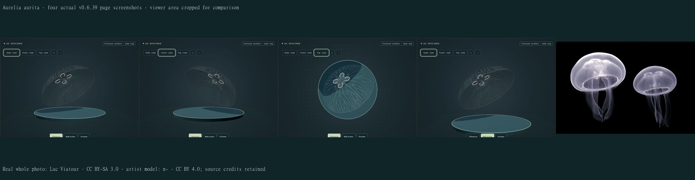
Changes: Retained n- creator tissue meshes, UVs, skeleton, weights, image bytes and animation. One rigid axis alignment and separately disclosed opacity/roughness changes expose the bell and four folded oral arms.
Source: Marine Biological Association · Moon jelly account. Actual species-description text; short tentacle fringe, four oral arms, horseshoe gonads and branched/unbranched canals. Historical name application is not a modern genetic redetermination.
Reference context: False-colour aquarium lighting; identity within the Aurelia complex is not independently re-determined.
Authentic whole photograph: Luc Viatour · CC BY-SA 3.0. No generative replacement, recolouring or organism-photo fabrication.
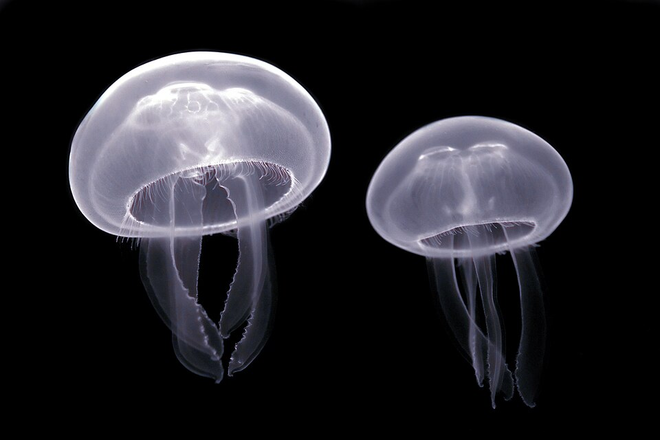
Existing delivered image bytes and source attribution retained. Current delivery checksum does not claim new original-resolution retrieval or independent identification.
f3645db2e4fb444ff0a8fc24376401adb5a374027162180263d6ac6f01a79995
Retained artist mesh: Simple Moon Jellyfish (Baked Animation) · n- (https://sketchfab.com/n-) · CC BY 4.0. Original GLB bytes unchanged. The visibility and rigid alignment are runtime derivatives, not new source specimen data.
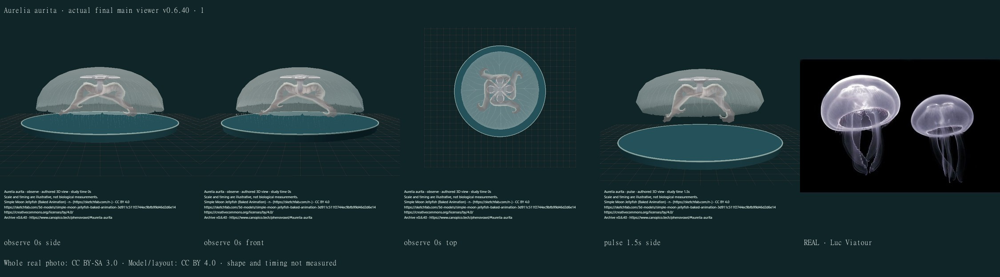
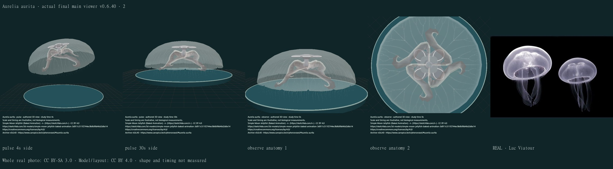
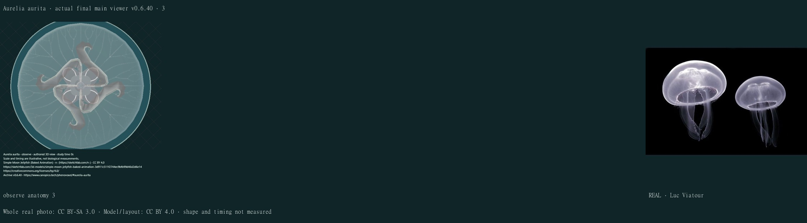
Remaining: The artist selected form has short splayed arms and simplified tissue, canals and gonadal shapes. False-colour aquarium photography does not fit natural pigment or a particular life stage.
Movement: Retained creator clip stops at its source duration, then holds. It is not a measured swimming or feeding controller.
Inspect this same model · Return to index
Cassiopea xamachana
Initial individual correction; further realism remains
Before: Rigid vertical beaded arms over a thin dish; overly uniform opaque tissue.
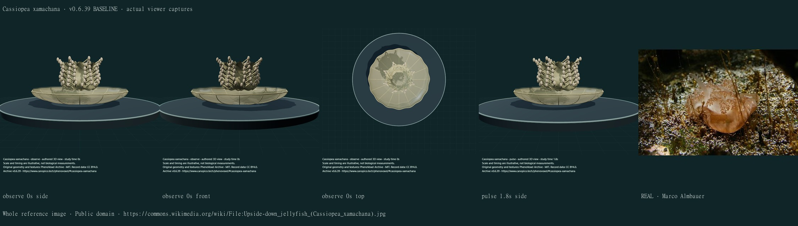
Changes: Broader splayed branched arms, shared oral disc, selected club-like appendages and a closed low bell held inverted.
Source: Regenerative Capacity of the Upside-down Jellyfish · 2019. Selected accessible article/index text describes specimens with eight arms and variable club/ribbon appendages. Later full-page retrieval returned verification: no complete figure/kinematic inspection claimed. Regenerating individuals are not universal adult templates.
Reference context: Source-identified real organism; stage, optics and movement are not calibrated from one image.
Authentic whole photograph: Marco Almbauer · Public domain. No generative replacement, recolouring or organism-photo fabrication.
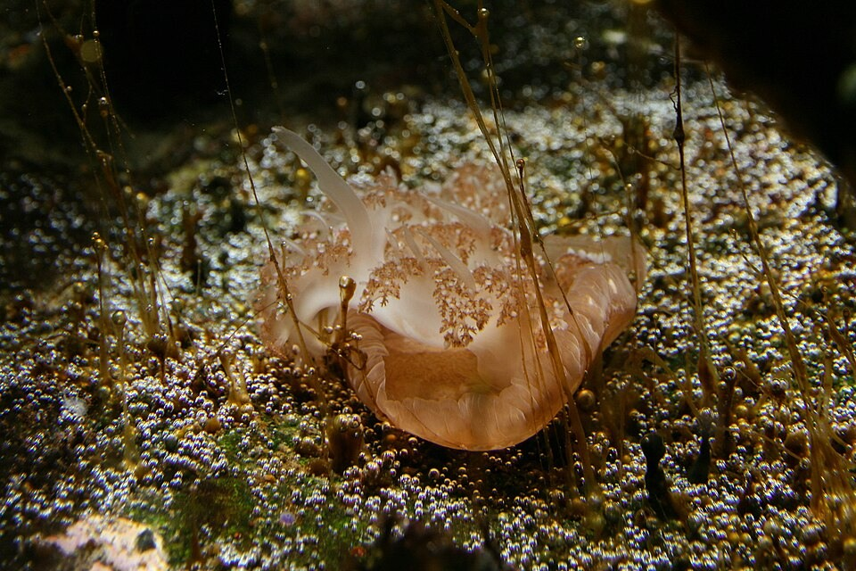
Existing delivered image bytes and source attribution retained. Current delivery checksum does not claim new original-resolution retrieval or independent identification.
3d7dc0c61b772b55f94d06c9bdb7fcd47cac4540fd80c5815e0a330921e4d23d
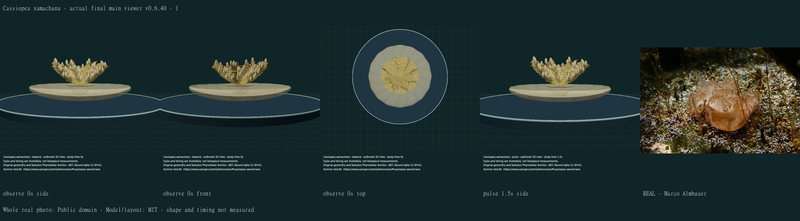
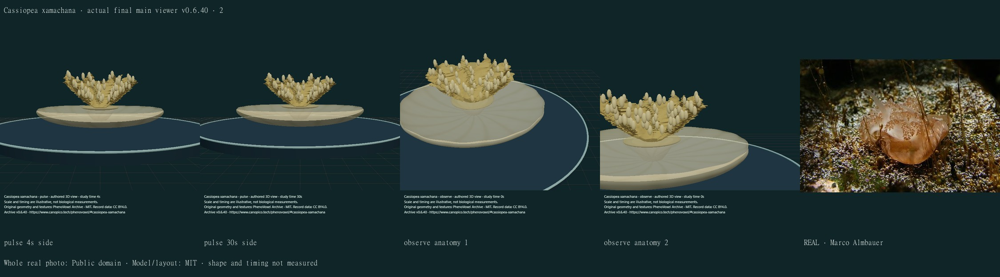
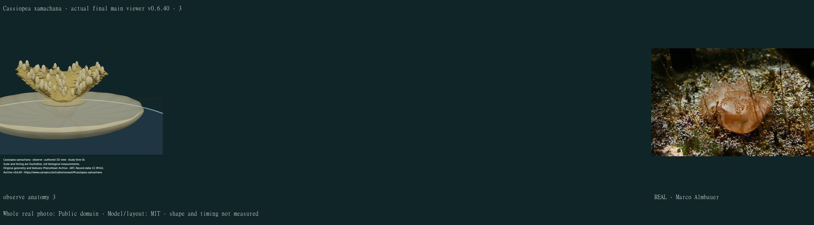
Remaining: Selected eight-arm form is unmeasured; vesicles, tissue unions, symbiont colour and canal network remain simplified. Substrate suction, generated feeding currents and tissue regeneration are absent.
Movement: Two selected local contractions with coupled appendage attachment return to neutral and stop after six authored display seconds. No water transport or displacement is calculated.
Inspect this same model · Return to index
Cotylorhiza tuberculata
Initial individual correction; further realism remains
Before: Detached-looking egg-shaped centre and narrow ladder-like oral arms.
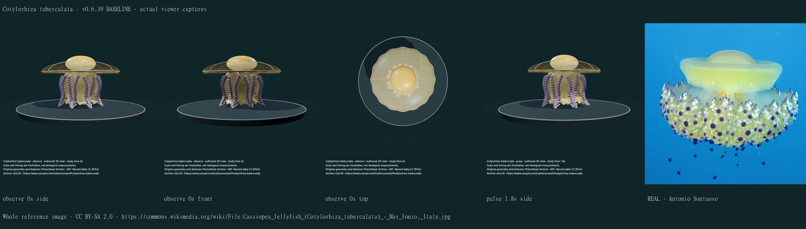
Changes: Continuous central dome/flat bell exterior, broader eight-part branching oral region and selected violet terminal clubs. Rejected feather-like tubular ladders; selected wider folded laminae, a deeper rounded eight-part oral region and variable violet clubs replace them.
Source: DORIS · Fried-egg jellyfish account. Actual specialist description: raised central bell, divided oral structures and violet-tipped appendages; no marginal tentacles. Photographs/measurements from that page are not redistributed or fitted.
Reference context: Source-identified real organism; stage, optics and movement are not calibrated from one image.
Authentic whole photograph: Antonio Sontuoso · CC BY-SA 2.0. No generative replacement, recolouring or organism-photo fabrication.
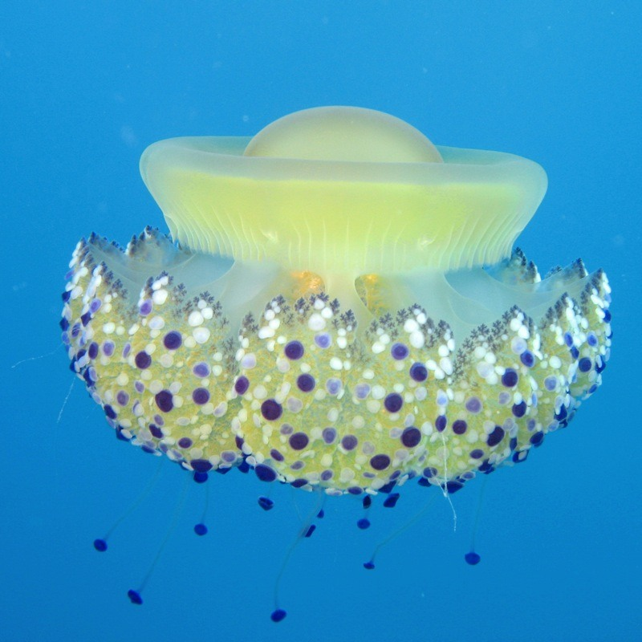
Existing delivered image bytes and source attribution retained. Current delivery checksum does not claim new original-resolution retrieval or independent identification.
60b0a209739bd03860f5e79e184d712ab8602dd7af3d17d6efbd2ac047237b05
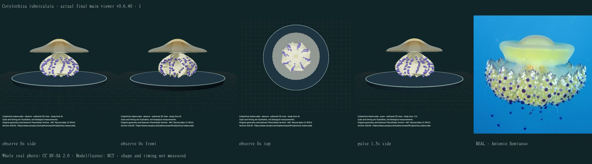
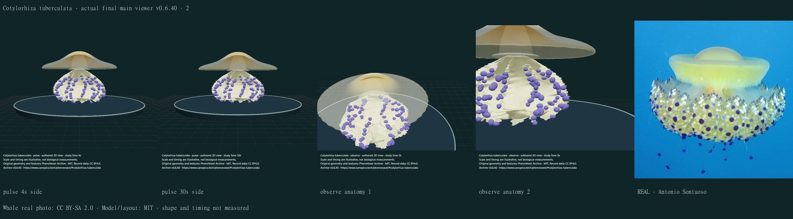
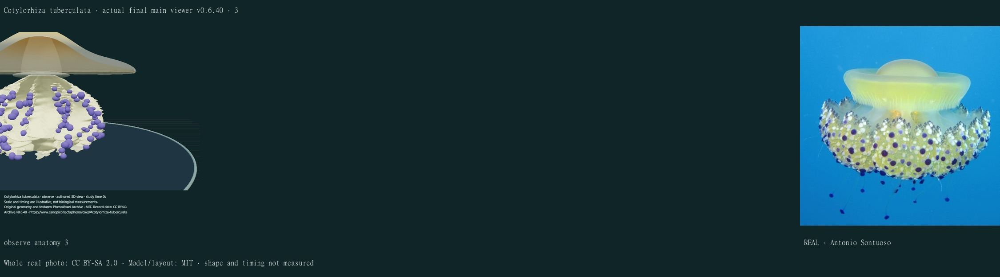
Remaining: Clubs and branches still repeat and lack natural fine mouthlet folds; colour and symbiont tissue are uncalibrated. No food transfer or mouthlet flow is solved. The dense branching, club distribution, neck junction and translucent bell still differ visibly from the photographed individual; no fitted anatomy or optical calibration.
Movement: Two selected local contractions with coupled appendage attachment return to neutral and stop after six authored display seconds. No water transport or displacement is calculated.
Inspect this same model · Return to index
Rhizostoma pulmo
Initial individual correction; further realism remains
Before: Thin umbrella with eight flat narrow sheets resembling one central stalk.
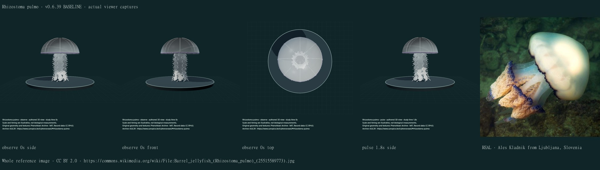
Changes: Thicker closed dome, selected 88 marginal lappets, 16 upper scapulet studies and eight wider frilled arms with terminal clubs. Rejected narrow feather-like arms; broader folded laminae, violet marginal pigment and separate upper scapulet surfaces now distinguish the oral region.
Source: Naturalis · Rhizostoma description. Actual description: thick hemispherical bell, lobed violet margin, 16 scapulets, eight divided oral arms with terminal clubs, no marginal tentacles. Historical North Sea scope may include R. octopus; not a new concept determination.
Reference context: Source-identified real organism; stage, optics and movement are not calibrated from one image.
Authentic whole photograph: Ales Kladnik from Ljubljana, Slovenia · CC BY 2.0. No generative replacement, recolouring or organism-photo fabrication.
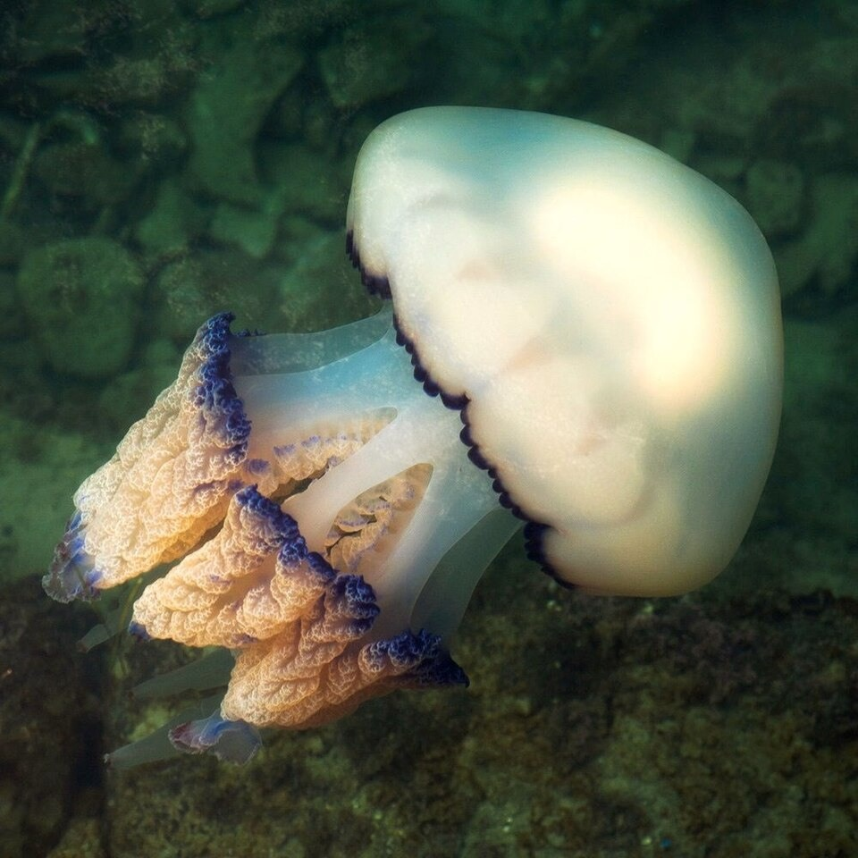
Existing delivered image bytes and source attribution retained. Current delivery checksum does not claim new original-resolution retrieval or independent identification.
5b05438caa9caca982ad07c7e9ac72badddae766583e4cb44a2ddacabdad8430
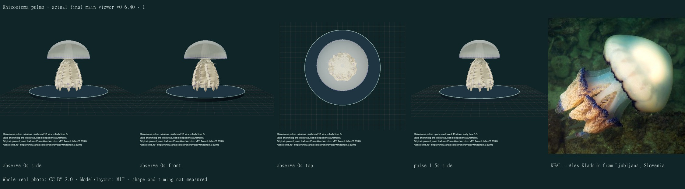
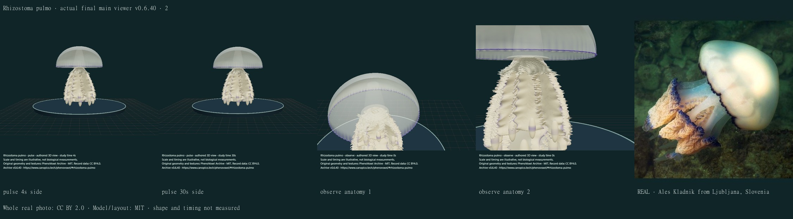
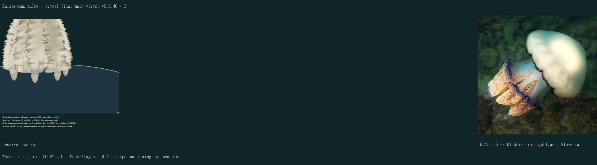
Remaining: Lappets, Y-shaped arm sections, fine mouthlets and tissue continuity remain approximations. R. pulmo versus R. octopus must not be resolved from a common name or this historical account alone. Oral folds and terminal clubs retain visible numerical regularity; selected arm/bell proportions are not measured.
Movement: Two selected local contractions with coupled appendage attachment return to neutral and stop after six authored display seconds. No water transport or displacement is calculated.
Inspect this same model · Return to index
Chrysaora hysoscella
Initial individual correction; further realism remains
Before: Straight numerical compass lines and nearly hidden, thin oral ribbons.
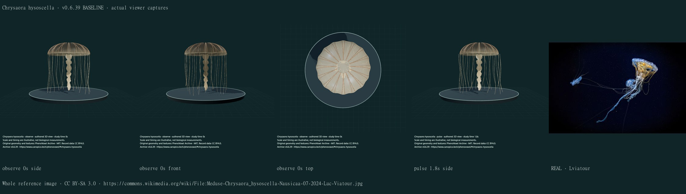
Changes: Pigmented V fields replace wire-like marks; four thickened frilled arms, selected lobed bell and tapered unequal tentacles remain distinct. A compiled draft showed overly broad opaque oral tissue; selected ribbons were narrowed and tissue opacity reduced.
Source: Marine Biological Association · Compass jelly account. Actual species description: 16 brown V marks, 32 lobes, four oral arms and 24 marginal tentacles arranged in eight groups of three. Not a fitted swimming cycle.
Reference context: Source-identified real organism; stage, optics and movement are not calibrated from one image.
Authentic whole photograph: Lviatour · CC BY-SA 3.0. No generative replacement, recolouring or organism-photo fabrication.
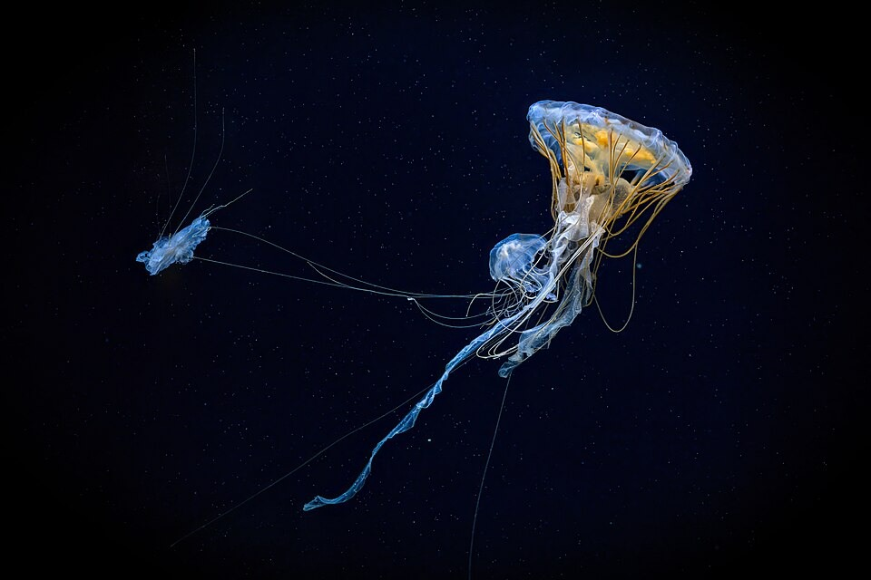
Existing delivered image bytes and source attribution retained. Current delivery checksum does not claim new original-resolution retrieval or independent identification.
1fcd23dd20b37278480ac2b3e37e6460656d7aa04d07423d0f901346f920d9f0
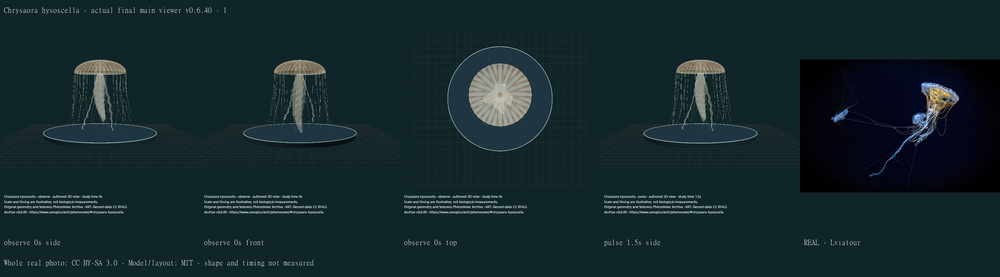
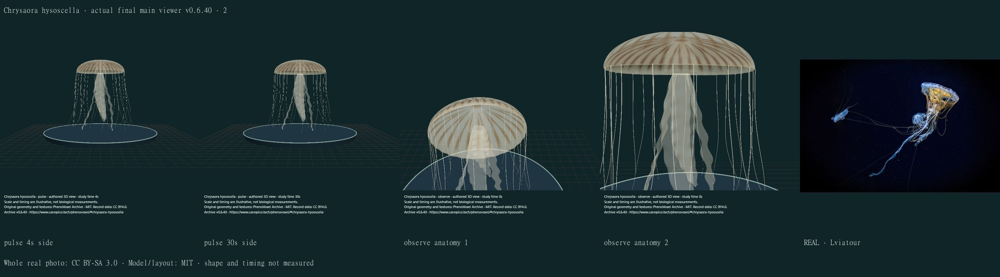
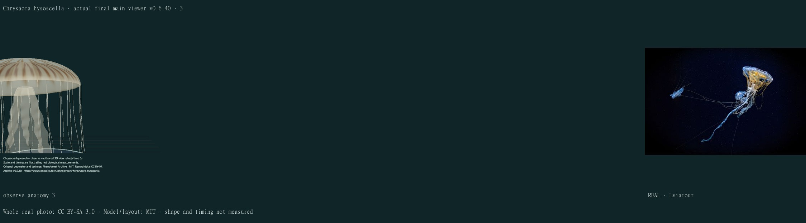
Remaining: Pigment edges, frills, lappets and tentacle trajectories still repeat. The selected pose lacks naturally variable coiling and complete prey transfer. Four overlapping arm surfaces and shallow fold relief still simplify the much more delicate real tissues.
Movement: Two selected local contractions with coupled appendage attachment return to neutral and stop after six authored display seconds. No water transport or displacement is calculated.
Inspect this same model · Return to index
Cyanea capillata
Initial individual correction; further realism remains
Before: Sparse thin clusters around an overly regular dome; narrow central oral stalk.
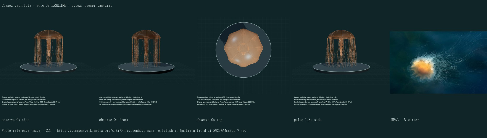
Changes: Eight selected clusters of 70 unequal tapered tentacles and four broader folded arms below a lobed warm-toned bell.
Source: Marine Biological Association · Lion’s mane account. Actual species-description text: eight dense tentacle clusters and thick folded oral arms, with variable yellow/red/brown tissue. Selected counts are display choices, not a measured individual.
Reference context: Source-identified real organism; stage, optics and movement are not calibrated from one image.
Authentic whole photograph: W.carter · CC0. No generative replacement, recolouring or organism-photo fabrication.
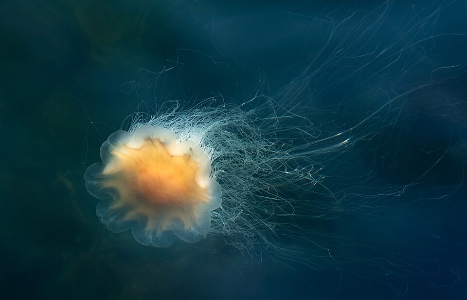
Existing delivered image bytes and source attribution retained. Current delivery checksum does not claim new original-resolution retrieval or independent identification.
a874e071040580e6ac211fb0583de83001edff410ea78289194c336fccd8c3de
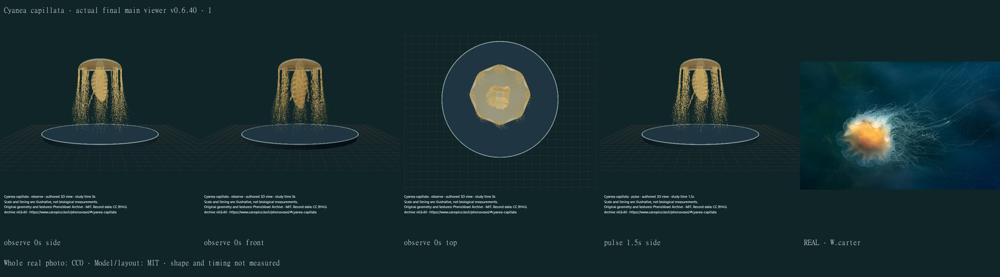
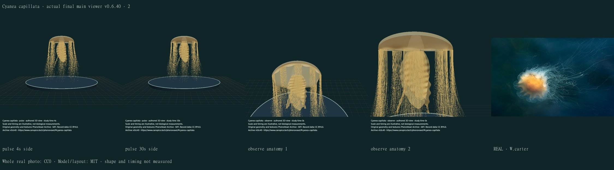
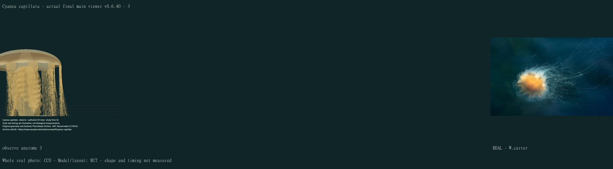
Remaining: Dense strands remain numerically arranged; frills, tissue optical thickness, natural size/colour variation and inter-strand contact are unmeasured.
Movement: Two selected local contractions with coupled appendage attachment return to neutral and stop after six authored display seconds. No water transport or displacement is calculated.
Inspect this same model · Return to index
Pelagia noctiluca
Initial individual correction; further realism remains
Before: Smooth regular dome with widely spaced dots and flat centrally overlapping arms.
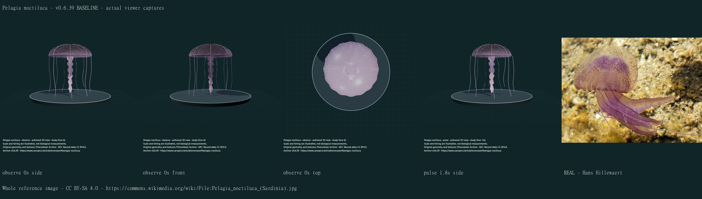
Changes: Selected deeper bell with irregular original mauve pigment, four volumetric folded arms, 16 lobes and eight tapered tentacles.
Source: DORIS · Mauve stinger account. Actual specialist text: four oral arms, eight tentacles, 16 lobes and mauve nematocyst-bearing warts. No source image pixels or fitted trajectories used.
Reference context: Source-identified real organism; stage, optics and movement are not calibrated from one image.
Authentic whole photograph: Hans Hillewaert · CC BY-SA 4.0. No generative replacement, recolouring or organism-photo fabrication.
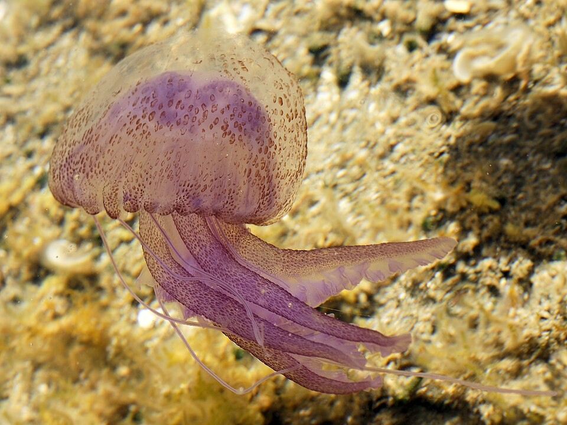
Existing delivered image bytes and source attribution retained. Current delivery checksum does not claim new original-resolution retrieval or independent identification.
5637d69337098e767636625cc182844a0671bbc83b2780d7e601328ec2efd40b
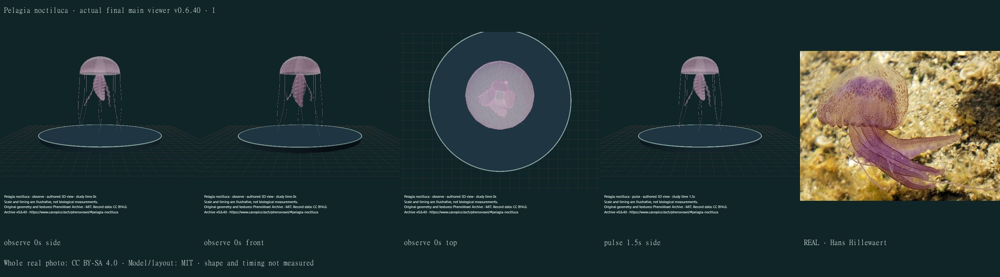
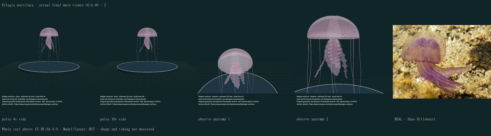
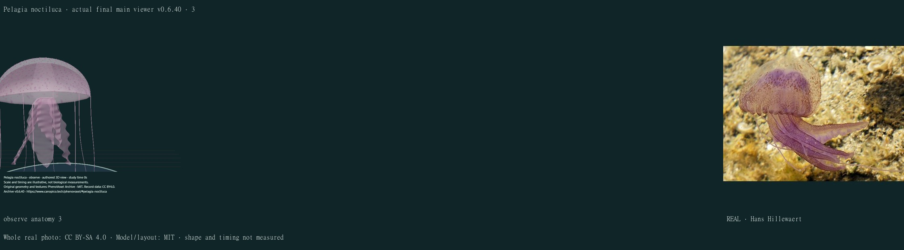
Remaining: Mauve wart relief, real cellular pattern, arm folds, translucency and bioluminescence remain incomplete or uncalibrated.
Movement: Two selected local contractions with coupled appendage attachment return to neutral and stop after six authored display seconds. No water transport or displacement is calculated.
Inspect this same model · Return to index
Aequorea victoria
Initial individual correction; further realism remains
Before: Opaque wire-like radial spokes, tiny mouth and uniform short tentacles.
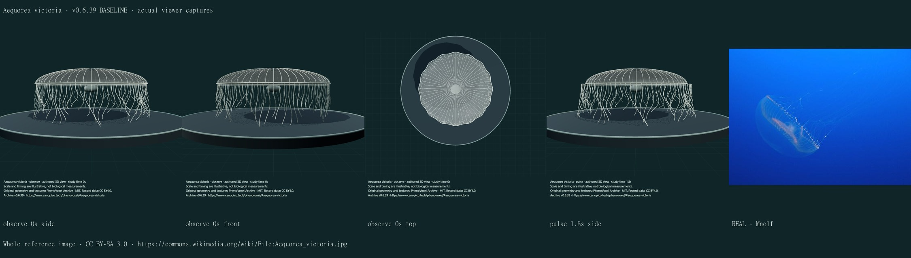
Changes: Selected 80 radial tracks, broad frilled manubrium, annular velum, closed shallow bell and 96 unequal marginal tentacles.
Source: Walla Walla University · Aequorea field account. Actual author-reported specimens and description: many unbranched canals, frilled mouth and velum; counts and tentacle extension vary. No universal fixed count or fluorescence simulation.
Reference context: Source-identified real organism; stage, optics and movement are not calibrated from one image.
Authentic whole photograph: Mnolf · CC BY-SA 3.0. No generative replacement, recolouring or organism-photo fabrication.
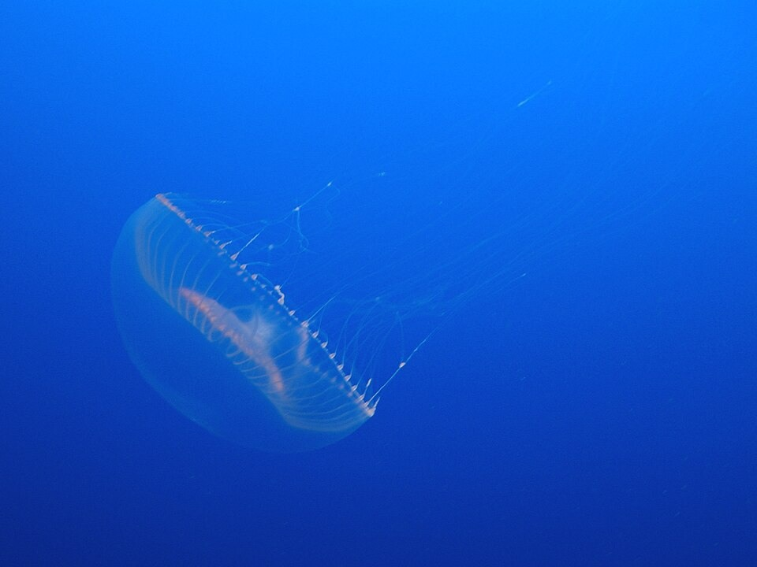
Existing delivered image bytes and source attribution retained. Current delivery checksum does not claim new original-resolution retrieval or independent identification.
32ef076eedf6a45bd3366c0a9f3f50748506dc565e7c9b7b1cfbcd0fb412cec9
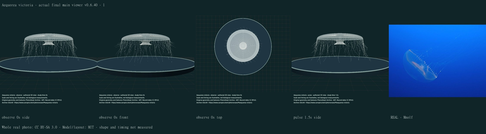
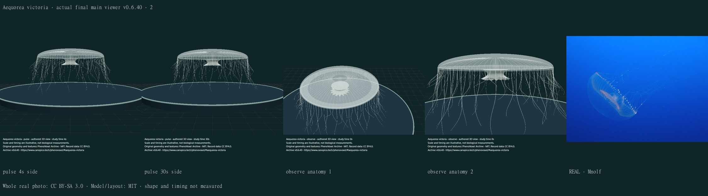
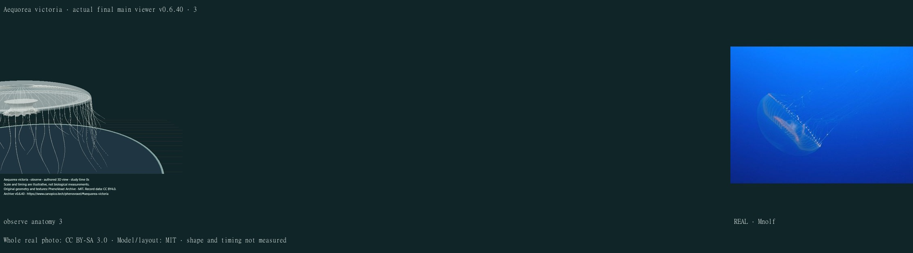
Remaining: Selected counts, gonadal tracts, mouth shape and transparency are not specimen-fitted; no fluorescent proteins, spectra or fluid forces are simulated.
Movement: Two selected local contractions with coupled appendage attachment return to neutral and stop after six authored display seconds. No water transport or displacement is calculated.
Inspect this same model · Return to index
Craspedacusta sowerbii
Initial individual correction; further realism remains
Before: Uniform tentacle fringe, missing visible pendant gonadal sacs and tiny central mouth.
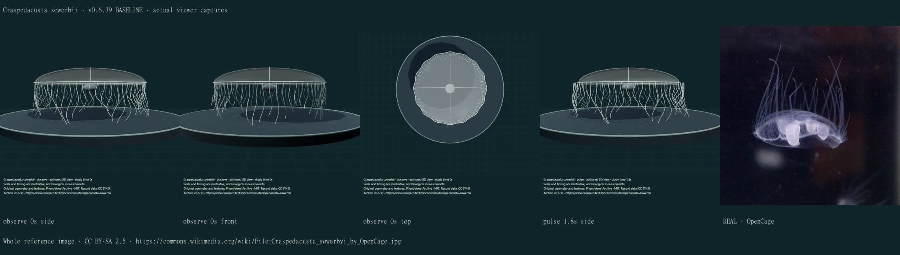
Changes: Four selected pendant gonadal sacs, four longer primary tentacles among 96 smaller ones, four canals, quadrangular manubrium and annular velum.
Source: Smithsonian SERC NEMESIS · Freshwater jellyfish. Actual Smithsonian species account, not collection determination: four canals, quadrangular manubrium, folded lips and four large tentacles among smaller ones; states ocelli absent. Related account contradicts eyespot claims, so no eyes are added.
Reference context: Source-identified real organism; stage, optics and movement are not calibrated from one image.
Authentic whole photograph: OpenCage · CC BY-SA 2.5. No generative replacement, recolouring or organism-photo fabrication.
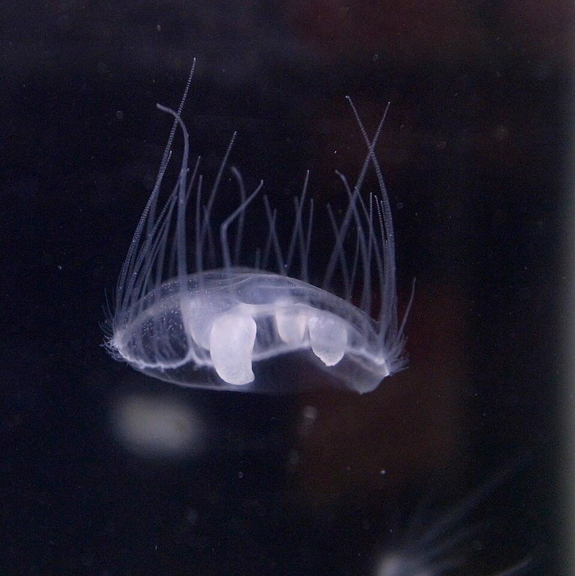
Existing delivered image bytes and source attribution retained. Current delivery checksum does not claim new original-resolution retrieval or independent identification.
3985d2bd3fa5ebdb8085e15b56bf0c51f8afc508b52496869ff7cfc3058719bb
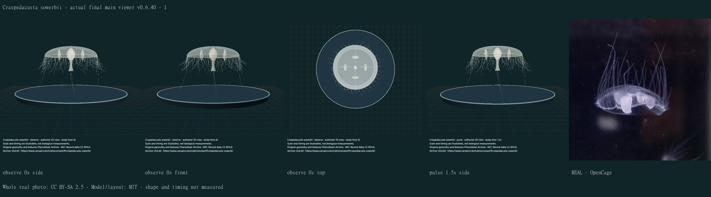
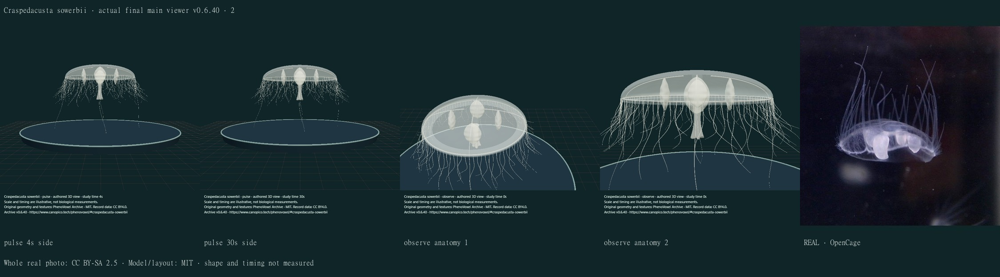
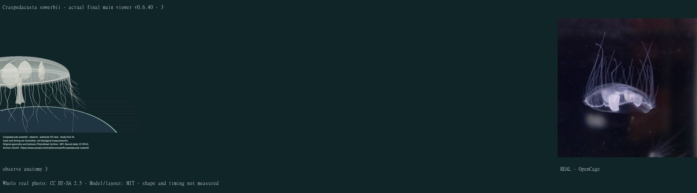
Remaining: Gonadal folding, counts, fine nematocyst rings, statocysts and optics are unmeasured; no polyp/podocyst lifecycle or fitted propulsion.
Movement: Two selected local contractions with coupled appendage attachment return to neutral and stop after six authored display seconds. No water transport or displacement is calculated.
Inspect this same model · Return to index
Chironex fleckeri
Initial individual correction; further realism remains
Before: Rounded dome over square base, narrow pedalia and nearly identical unbanded strands.
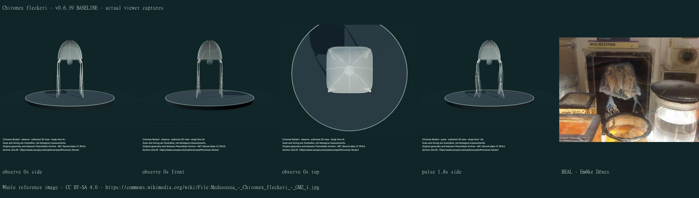
Changes: Squarer-sided closed bell, four selected palmate pedalia with 12 tentacles each, annular velarium and selected rhopalial locations.
Source: Australian Museum · Box jellyfish. Actual museum species account: transparent box-like bell and four tentacle clumps, up to 60 tentacles. Existing reference photograph is a preserved museum display; not live body colour, extension or gait evidence.
Reference context: Preserved museum display specimen. It does not establish live bell colour, tentacle extension or swimming posture.
Authentic whole photograph: Emőke Dénes · CC BY-SA 4.0. No generative replacement, recolouring or organism-photo fabrication.
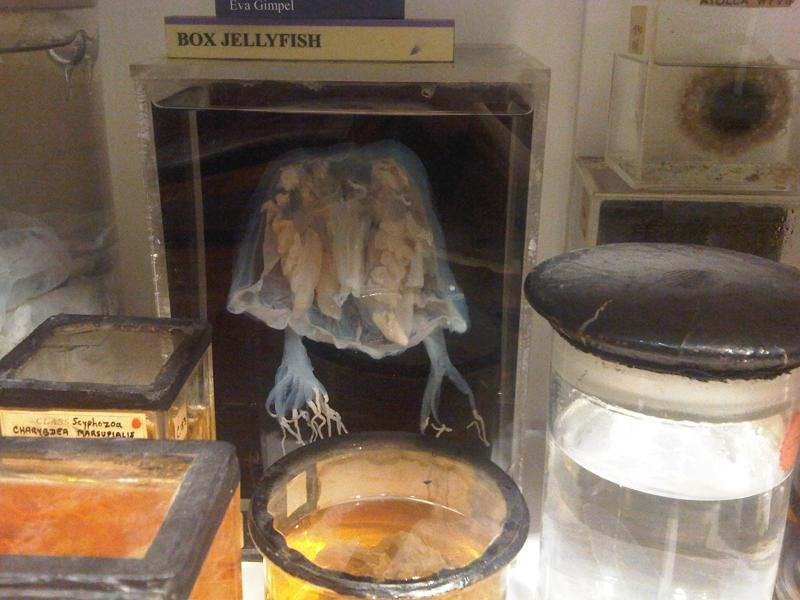
Existing delivered image bytes and source attribution retained. Current delivery checksum does not claim new original-resolution retrieval or independent identification.
b8b8645c97f1776869d715e4f05697cdfb3874e40c76efcaa95d2a148f5492d4
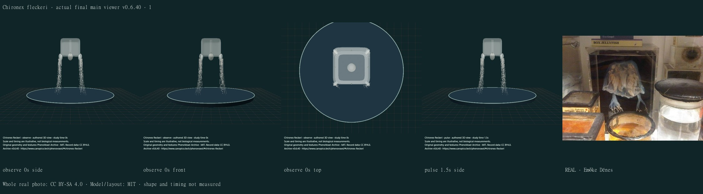
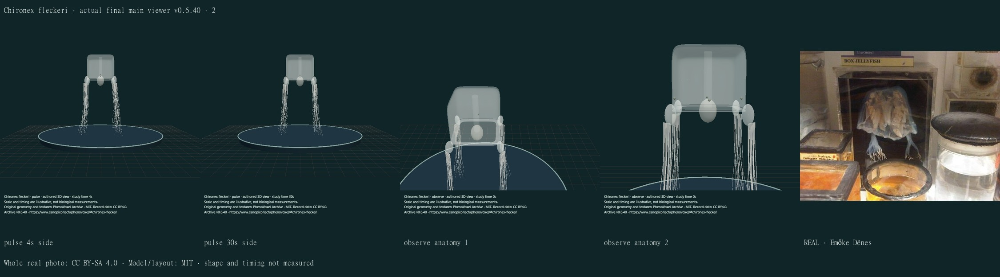
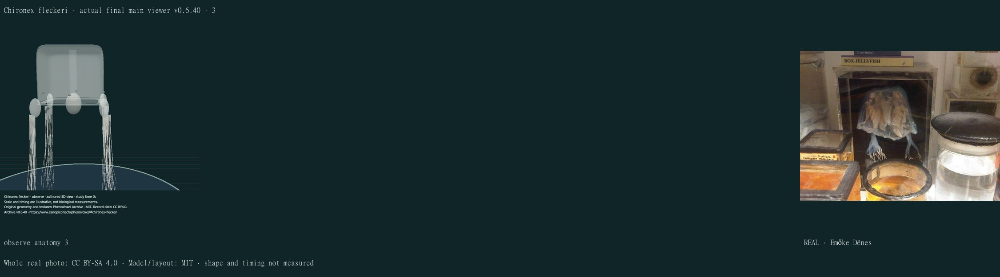
Remaining: Pedalial canals, full 24-eye anatomy, velarial canals and actual band structure are incomplete; source preserved specimen cannot calibrate live optics. No venom, sensing or flow solver.
Movement: Two selected local contractions with coupled appendage attachment return to neutral and stop after six authored display seconds. No water transport or displacement is calculated.
Inspect this same model · Return to index
Physalia physalis
Initial individual correction; further realism remains
Before: Regular oval float, solid flat sail and uniformly spaced hanging strings.
Changes: Selected asymmetric inflated envelope/creased crest and crowded ventral zooid region with fewer unequal coiled capture strands.
Source: Munro et al. · Physalia morphology · 2019. Selected article/index text describes expanded float, muscular crest and ventral zooid organization; later full retrieval returned verification. Uses historical broad Physalia concept; newer 2025 genomic work separates species. No full figure or fitted colony-development review claimed.
Reference context: Historical source identification; not re-determined under the newer Physalia species split.
Authentic whole photograph: Image courtesy of Islands in the Sea 2002, NOAA/OER. · Public domain. No generative replacement, recolouring or organism-photo fabrication.
Existing delivered image bytes and source attribution retained. Current delivery checksum does not claim new original-resolution retrieval or independent identification.
2ad6d084a3c660cc742b725f30953784ec82601f455549b49fa629f15ab983da
Remaining: Fine zooid types, stem organization, attachment and crest mechanics remain simplified. Source photo is not reidentified genetically under the new split; accepted accession retained with concept/map caveat.
Movement: A bounded six-second authored local bending gesture returns to neutral on the same colony surfaces. Float and sail remain fixed; wind, water, prey handling and complete colony movement are not calculated.
Inspect this same model · Return to index
Velella velella
Initial individual correction; further realism remains
Before: Opaque flat sail and faceted untextured float with sparse repetitive fringe.
Changes: Thin volumetric oblique sail, selected chamber surface cues, bluer margin and denser underside zooid fringe.
Source: Walla Walla University · Velella field account. Actual author description/photos of blue elliptical float, concentric gas chambers, oblique clear sail and short underside zooids. Historical higher-order names are not imported over modern record taxonomy.
Reference context: Source-identified real organism; stage, optics and movement are not calibrated from one image.
Authentic whole photograph: Jymm · Public domain. No generative replacement, recolouring or organism-photo fabrication.
Existing delivered image bytes and source attribution retained. Current delivery checksum does not claim new original-resolution retrieval or independent identification.
9b9119763ff01faf24f3c060f9ece98abc6157a0c9c66affb8e41c5b96ab9546
Remaining: Sail is still regular and unmeasured; internal gas chambers and colony anatomy are not reconstructed histologically. No wind, buoyancy or sailing dynamics.
Movement: A bounded six-second authored local bending gesture returns to neutral on the same colony surfaces. Float and sail remain fixed; wind, water, prey handling and complete colony movement are not calculated.
Inspect this same model · Return to index
Porpita porpita
Initial individual correction; further realism remains
Before: Plain flat cream disk and equally long radial fence-like appendages.
Changes: Original radial/concentric float relief/pigment, unequal curved capitate zooids and separate underside reproductive/central feeding regions. Final comparison found pale underside zooids visible through the brown float. Its selected upper exterior is now opaque; underside inspection retains separate zooid visibility.
Source: DORIS · Porpita specialist account. Actual specialist description: chambered circular float, central feeding zooid, pale reproductive region and unequal capitate peripheral zooids. A colony rather than an individual medusa.
Reference context: Source-identified real organism; stage, optics and movement are not calibrated from one image.
Authentic whole photograph: Bruce Moravchik (NOAA) · Public domain. No generative replacement, recolouring or organism-photo fabrication.
Existing delivered image bytes and source attribution retained. Current delivery checksum does not claim new original-resolution retrieval or independent identification.
d1d4294725e464aa305b3d700134af1e6944975c79a6ce92aec9df0034094e02
Remaining: Float chamber detail, surface microstructure, zooid tissue and appendage numbers remain unmeasured; release, prey handling, symbiosis and float mechanics absent. Natural chamber texture and irregular zooid density are still not reconstructed.
Movement: A bounded six-second authored local bending gesture returns to neutral on the same colony surfaces. Float and sail remain fixed; wind, water, prey handling and complete colony movement are not calculated.
Inspect this same model · Return to index
Download the actual study views
117 attributed model PNGs and their checksum/state manifest. The archive includes model views, not organism photographs or private paper figures. Model/layout and retained artist licenses are explained inside.
How the review was performed
Every selected record received its own real-image and source comparison. Side, front and top views, selected action phases, and all three anatomical foci are checked in the actual main viewer. Final source/version gates reject stale bundles; only nonblank individually inspected views are counted. Drafts are excluded. Four Aurelia baseline screenshots are page captures, cropped only for the comparison layout; the other 45 baseline states and all final main views are synchronous attributed canvas exports.
Early candidates were rejected for thin separated branched arms, overly regular frills, uniform glass-like opacity, missing central tissue connections and poor anatomy targeting. Wider selected tissues, species-dependent optical visibility, central peduncle regions and retained-surface anchors address those visible defects. Later compiled candidates also exposed inconsistent rim-face directions, hard-looking joins, feather-like oral ladders and tight anatomy framing; these were rejected and repaired. A graphics-context loss was actually observed after slow browser/capture responses; no unique cause or performance benchmark is established. A heavy physical-material candidate was replaced with simpler translucent tissue rendering. The recovered browser selected compatibility rendering. Its missing RGBA vertex-opacity support was corrected and tested; RGB-only surfaces retain their original opacity. Some folds, lobes, branch spacing and appendage trajectories remain conspicuously numerical.
New bell surfaces enclose a finite tissue thickness and hydrozoan velum/cubozoan velarium rings retain central openings. Their sizes, selected counts and deformation fields are authored choices. Strands remain attached because tissues share a continuous spatial deformation field; this does not solve elasticity, water flow, muscle stresses, prey capture or contact. The finite six-second local studies return to neutral; the retained moon-jelly creator sequence stops at its source duration. No standing/sleep/feeding action is inferred from bobbing or generic rig motion. The earlier Aurelia forage surrogate is withdrawn.
Earlier candidates were inspected in WebGL before the graphics interruption. The final renderer for each actual capture is recorded in the ledger; final WebGL optical confirmation must not be inferred from compatibility captures. Default WebGL has an illustrative edge-visibility shader. Standard export/compatibility mode has constant opacity and reduced optical fidelity. No calibrated refraction, scattering, microscopic cnidocytes or biochemical fluorescence is claimed. Real photographs keep their original imaging conditions and licenses. Model/layout code is original MIT except the retained CC BY4.0 moon-jelly artist asset; each photo retains its separately linked license.
Source access notes distinguish actual institutional/specialist descriptive text from selected article/index text and later verification failures. Hirose et al.2025 publisher HTML, selected methods/discussion and complete Figure1 were actually inspected for qualitative Physalia/Velella surface context. Its historical Japanese Physalia identification is not reconciled to recent splits. No measured optical constants, microscopic dimensions or optical solver are imported; no paper figure is redistributed. Other blocked full methods/figures and fitted kinematics are not claimed. The fresh GBIF check initially failed through one network client, then all13 usages were retrieved through the normal HTTP client; the failed attempts are retained privately. No credentials or verification gates were bypassed.
The first full software regression completed281 of283 checks successfully. Two historical/current-inventory assumptions failed and received narrowly scoped repairs; the historical hashes and source-payload assertions remain. The later broad 284/284 pass predates the final Porpita-only opacity repair; 20 affected checks passed afterward. All 117 final states were recaptured, 107 exactly matching previously inspected images and 10 newly inspected. Final software results and their scope are recorded in the machine-readable report. These are software checks, not scientific certification.
Individual machine-readable findings, source scopes, photo hashes and capture ledger · Published software checks